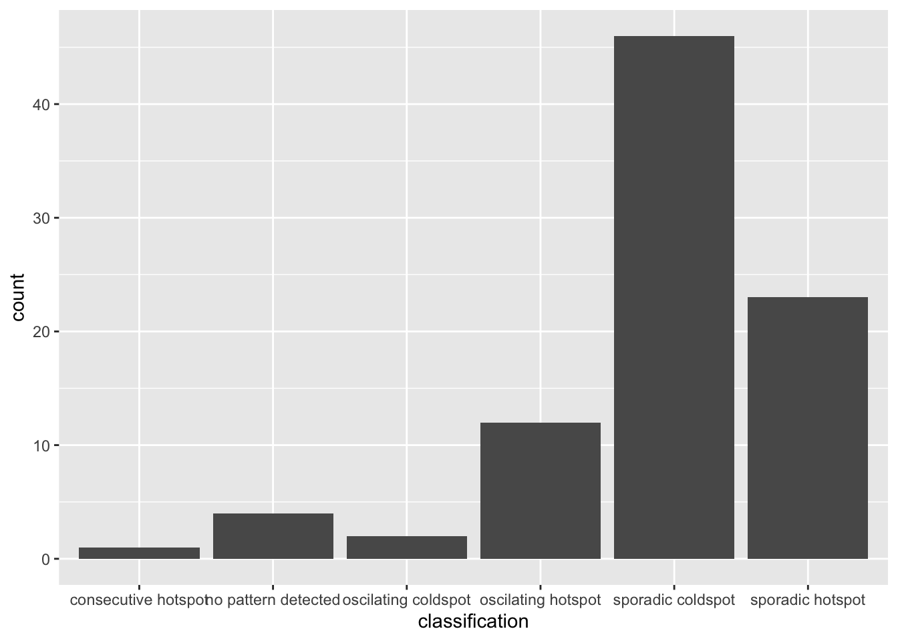
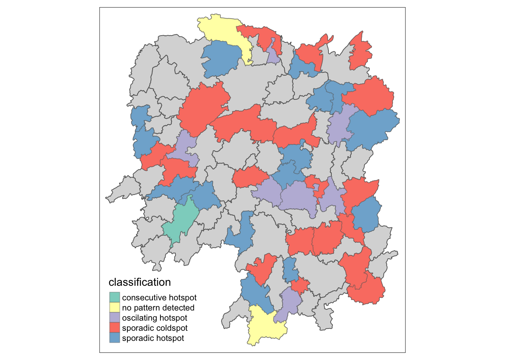

pacman::p_load(sf, sfdep, tmap, tidyverse, plotly)In-class Exercise 2C: EHSA
Overview
For this exercise, we will do spatio-temporal analysis to understand spatial patterns with additional factor of time.
Getting Started
Four R packages will be used for this in-class exercise are: sf, sfdep, tmap, tidyverse, and knitr.
sf - for processing geospatial data
sfdep - provides tools Emerging Hot Spot Analysis
tmap - for generating thematic maps
tidyverse - for processing aspatial data
plotly - for interactive graphs
Preparing the data
Next we move the provided data from E-learn under the data/ directory. We will also create `rds/` directory for saving the calculated data for later use.
Importing the data
First, we will import the geospatial data in shp format.
hunan = st_read(dsn = "data/geospatial",
layer = "Hunan")Reading layer `Hunan' from data source
`/Users/kjcpaas/Documents/Grad School/ISSS624/Project/ISSS624/In-class_Ex2/data/geospatial'
using driver `ESRI Shapefile'
Simple feature collection with 88 features and 7 fields
Geometry type: POLYGON
Dimension: XY
Bounding box: xmin: 108.7831 ymin: 24.6342 xmax: 114.2544 ymax: 30.12812
Geodetic CRS: WGS 84Second, we import the aspatial data Hunan_GDPPC, which contains the GDP Per Capita (GDPPC) of Chinese counties.
GDPPC = read_csv("data/aspatial/Hunan_GDPPC.csv")Creating a Time Series Cube
GDPPC_st <- spacetime(GDPPC, hunan,
.loc_col = "County",
.time_col = "Year")
GDPPC_st# A tibble: 1,496 × 3
Year County GDPPC
* <dbl> <chr> <dbl>
1 2005 Longshan 3469
2 2005 Changsha 24612
3 2005 Wangcheng 14659
4 2005 Ningxiang 11687
5 2005 Liuyang 13406
6 2005 Zhuzhou 8546
7 2005 You 10944
8 2005 Chaling 8040
9 2005 Yanling 7383
10 2005 Liling 11688
# ℹ 1,486 more rowsWe can check if the output is indeed a space-time cube:
is_spacetime_cube(GDPPC_st)[1] TRUEComputing Gi*
Deriving spatial weights
Similar to the previous exercises, we calculate inverse distance first. However, we now have a time column in our data which is Year.
GDPPC_nb <- GDPPC_st %>%
activate("geometry") %>%
mutate(nb = include_self(st_contiguity(geometry)),
wt = st_inverse_distance(nb, geometry,
scale = 1,
alpha = 1),
.before = 1) %>%
set_nbs("nb") %>%
set_wts("wt")
GDPPC_nb# A tibble: 1,496 × 5
Year County GDPPC nb wt
<dbl> <chr> <dbl> <list> <list>
1 2005 Anxiang 8184 <int [6]> <dbl [6]>
2 2005 Hanshou 6560 <int [6]> <dbl [6]>
3 2005 Jinshi 9956 <int [5]> <dbl [5]>
4 2005 Li 8394 <int [5]> <dbl [5]>
5 2005 Linli 8850 <int [5]> <dbl [5]>
6 2005 Shimen 9244 <int [6]> <dbl [6]>
7 2005 Liuyang 13406 <int [5]> <dbl [5]>
8 2005 Ningxiang 11687 <int [8]> <dbl [8]>
9 2005 Wangcheng 14659 <int [7]> <dbl [7]>
10 2005 Anren 7423 <int [9]> <dbl [9]>
# ℹ 1,486 more rowsComputing local Gi*
gi_stars <- GDPPC_nb %>%
group_by(Year) %>%
mutate(gi_star = local_gstar_perm(
GDPPC, nb, wt)) %>%
tidyr::unnest(gi_star)
gi_stars# A tibble: 1,496 × 13
# Groups: Year [17]
Year County GDPPC nb wt gi_star e_gi var_gi p_value p_sim
<dbl> <chr> <dbl> <list> <list> <dbl> <dbl> <dbl> <dbl> <dbl>
1 2005 Anxiang 8184 <int [6]> <dbl> 0.398 0.0115 2.67e-6 0.362 0.717
2 2005 Hanshou 6560 <int [6]> <dbl> -0.237 0.0110 2.90e-6 -0.0759 0.940
3 2005 Jinshi 9956 <int [5]> <dbl> 1.05 0.0126 3.20e-6 0.531 0.595
4 2005 Li 8394 <int [5]> <dbl> 0.966 0.0118 3.32e-6 0.843 0.399
5 2005 Linli 8850 <int [5]> <dbl> 1.05 0.0120 2.90e-6 0.931 0.352
6 2005 Shimen 9244 <int [6]> <dbl> 0.210 0.0122 2.87e-6 -0.282 0.778
7 2005 Liuyang 13406 <int [5]> <dbl> 3.91 0.0142 2.66e-6 3.28 0.00105
8 2005 Ningxiang 11687 <int [8]> <dbl> 1.61 0.0127 2.39e-6 0.887 0.375
9 2005 Wangcheng 14659 <int [7]> <dbl> 3.88 0.0140 2.66e-6 2.66 0.00792
10 2005 Anren 7423 <int [9]> <dbl> 1.67 0.0113 2.06e-6 1.90 0.0581
# ℹ 1,486 more rows
# ℹ 3 more variables: p_folded_sim <dbl>, skewness <dbl>, kurtosis <dbl>Mann-Kendall Test
We can use the Gi* values to evaluate each location for trends using Mann-Kendall Test. Example below uses Changsha county.
cbg <- gi_stars %>%
ungroup() %>%
filter(County == "Changsha") |>
select(County, Year, gi_star)
cbg# A tibble: 17 × 3
County Year gi_star
<chr> <dbl> <dbl>
1 Changsha 2005 5.03
2 Changsha 2006 5.17
3 Changsha 2007 5.30
4 Changsha 2008 5.60
5 Changsha 2009 6.28
6 Changsha 2010 5.94
7 Changsha 2011 5.75
8 Changsha 2012 5.69
9 Changsha 2013 5.71
10 Changsha 2014 5.76
11 Changsha 2015 6.10
12 Changsha 2016 6.00
13 Changsha 2017 6.20
14 Changsha 2018 6.04
15 Changsha 2019 6.58
16 Changsha 2020 5.77
17 Changsha 2021 5.75Now we plot this data using ggplot:
ggplot(data = cbg,
aes(x = Year,
y = gi_star)) +
geom_line() +
theme_light()
The graph above is static. We can make it interactive by using ggplotly().
p <- ggplot(data = cbg,
aes(x = Year,
y = gi_star)) +
geom_line() +
theme_light()
ggplotly(p)Next is to perform the test.
cbg %>%
summarise(mk = list(
unclass(
Kendall::MannKendall(gi_star)))) %>%
tidyr::unnest_wider(mk)# A tibble: 1 × 5
tau sl S D varS
<dbl> <dbl> <dbl> <dbl> <dbl>
1 0.485 0.00742 66 136. 589.In the above result, sl is the p-value. This result tells us that there is a slight upward but insignificant trend.
We can replicate this for each location by using group_by() of dplyr package.
ehsa <- gi_stars %>%
group_by(County) %>%
summarise(mk = list(
unclass(
Kendall::MannKendall(gi_star)))) %>%
tidyr::unnest_wider(mk)
ehsa# A tibble: 88 × 6
County tau sl S D varS
<chr> <dbl> <dbl> <dbl> <dbl> <dbl>
1 Anhua 0.191 0.303 26 136. 589.
2 Anren -0.294 0.108 -40 136. 589.
3 Anxiang 0 1 0 136. 589.
4 Baojing -0.691 0.000128 -94 136. 589.
5 Chaling -0.0882 0.650 -12 136. 589.
6 Changning -0.750 0.0000318 -102 136. 589.
7 Changsha 0.485 0.00742 66 136. 589.
8 Chengbu -0.824 0.00000482 -112 136. 589.
9 Chenxi -0.118 0.537 -16 136. 589.
10 Cili 0.103 0.592 14 136. 589.
# ℹ 78 more rowsArrange to show significant emerging hot/cold spots
emerging <- ehsa %>%
arrange(sl, abs(tau)) %>%
slice(1:5)
emerging# A tibble: 5 × 6
County tau sl S D varS
<chr> <dbl> <dbl> <dbl> <dbl> <dbl>
1 Shuangfeng 0.868 0.00000143 118 136. 589.
2 Xiangtan 0.868 0.00000143 118 136. 589.
3 Xiangxiang 0.868 0.00000143 118 136. 589.
4 Chengbu -0.824 0.00000482 -112 136. 589.
5 Dongan -0.824 0.00000482 -112 136. 589.Performing Emerging Hot spot Analysis
ehsa <- emerging_hotspot_analysis(
x = GDPPC_st,
.var = "GDPPC",
k = 1,
nsim = 99
)Visualizing the distribution of EHSA classes
ggplot(data = ehsa,
aes(x = classification)) +
geom_bar()
Figure above shows that sporadic cold spots class has the high numbers of county. Visualizing EHSA
To generate a map, we have to add geospatial component to the data to we have join ehsa with hunan.
hunan_ehsa <- hunan %>%
left_join(ehsa,
by = join_by(County == location))Then we can finally generate the map.
ehsa_sig <- hunan_ehsa %>%
filter(p_value < 0.05)
tmap_mode("plot")
tm_shape(hunan_ehsa) +
tm_polygons() +
tm_borders(alpha = 0.5) +
tm_shape(ehsa_sig) +
tm_fill("classification") +
tm_borders(alpha = 0.4)
Reflection
I find this exercise very helpful as I was thinking of doing analysis on the bus commuter trends, if I have enough time. I now know where to start in that analysis.